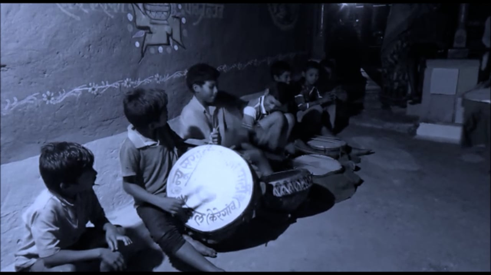

01
The Project
Ways of Seeing brings together projects and conversations around community media and Indigenous media that stand in opposition to conventional media forms. It gathers work that reflects a community’s own perspective rather than a filmmaker’s view from outside — media made through self-reflexive, participatory processes, where the people being represented take part in deciding how they are represented.
I began the archive in 2021 as a small curated website, conceived as a subset of the larger pedagogical conversation around Critical Media Literacy. It has since grown into a digital humanities project in its own right: a structured catalog with a consistent metadata model, curated paths through the collection, an annotated body of scholarship, and an explicit account of the ethics that govern what it holds and how.
The archive points rather than possesses. It links to films, collectives, and platforms where their makers host them, and does not re-host anyone else’s work. Each record describes a work, situates it, and sends you to its source.
02
Framework: Who Holds the Camera, Who Keeps the Record
The archive takes its name from John Berger’s Ways of Seeing, which insisted that “the relation between what we see and what we know is never settled.” Berger was writing about oil painting and advertising, but his premise runs through everything gathered here: an image is never simply a record of what was in front of the lens. It carries the position of the one who made it, and the purposes of those who circulate and keep it. This essay sets out the scholarship that shapes how I read and organize the collection. It moves through five conversations, each of which appears as a strand in the Readings.
Indigenous media and the question of sovereignty
Faye Ginsburg’s early work framed the dilemma that Indigenous media still carries. In “Indigenous Media: Faustian Contract or Global Village?” (1991), drawing on Aboriginal media groups in Central Australia, she asked whether the camera and the broadcast signal would erode Indigenous cultures or become tools for sustaining them. Her answer was neither naive nor fatalistic. In “Embedded Aesthetics” (1994) she argued that such work could not be judged by the textual standards of film criticism alone, because its value lay in how it was embedded in community relations: who made it, with whose permission, and for whom.
Jolene Rickard gave that argument its political name. In “Sovereignty: A Line in the Sand” (1995) she read Native photography as a record of political and spiritual sovereignty, moving the frame from victimization to resistance and self-determination. Michelle Raheja developed the idea as visual sovereignty in “Reading Nanook’s Smile” (2007), showing how Indigenous filmmakers such as Zacharias Kunuk take up the conventions of ethnographic film and revise them from inside. The collection Media Worlds (2002) placed these projects within a wider anthropology of media, alongside state broadcasting and the transnational travel of film and television.
I hold this lineage close because the films in the Screening Room, including my own, sit uneasily inside it. A film I direct in an Adivasi village is not Indigenous media in Rickard’s or Raheja’s sense, however participatory the process. The archive keeps that distinction visible: my own work is marked as the curator’s, and the collectives that make media on their own terms — among them AKHRA in Ranchi, Vídeo nas Aldeias in Brazil, and Isuma in Igloolik — are catalogued as the primary makers they are.
Community media in India
In India the history of self-representation runs as much through sound as through image. Vinod Pavarala and Kanchan Malik’s Other Voices (2007), the first systematic study of community radio in the country, includes the Alternative for India Development project in Daltonganj, Jharkhand, whose programme Chala Ho Gaon Mein was made in Magahi with its listeners. Their later edited volume, Community Radio in South Asia (2020), follows the form across policy, spectrum, gender, and conflict. The archive’s audio records — CGNet Swara’s voice portal, reachable from any mobile phone, and Asur Adivasi Mobile Radio, broadcasting in an endangered language in the weekly markets around Netarhat — are here because of this history: community media in central India is often built for the phone in the hand, not the screen.
Akash Poyam’s “A Resurgent Adivasi Media Is Setting Its Own Terms” (2021) describes the present of that history: independent platforms created and run by Adivasi journalists in response to the mainstream press’s exclusions. Alpa Shah’s ethnography of Jharkhand, In the Shadows of the State (2010), is the necessary counterweight. She shows how indigenous-rights activism and environmental conservation, however well meant, can reproduce the class divisions that marginalize the poorest people they claim to speak for. Any archive that gathers “Adivasi voices” has to ask which voices, gathered by whom, and at whose expense.
Community archives and symbolic annihilation
The second half of the archive’s question — who keeps the record — belongs to archival studies. Michelle Caswell’s “‘The Archive’ Is Not an Archives” (2016) is a useful warning to anyone arriving, as I did, from the humanities: the “archive” of critical theory is a metaphor, while archives are institutions with practitioners, standards, and a scholarship of their own. Andrew Flinn, Mary Stevens, and Elizabeth Shepherd’s “Whose Memories, Whose Archives?” (2009) studied grassroots archives in Britain and the value their makers placed on autonomy from mainstream heritage institutions.
Caswell, Marika Cifor, and Mario H. Ramirez’s “To Suddenly Discover Yourself Existing” (2016), based on interviews about the South Asian American Digital Archive, gives this project its clearest rationale. Community archives, they argue, counter the “symbolic annihilation” of marginalized groups — George Gerbner’s term, developed by Gaye Tuchman, for the ways mainstream media ignore, misrepresent, or malign them — and produce what the authors call representational belonging. Pad.ma, the Public Access Digital Media Archive, offers a practical model from much closer to home: footage kept whole and densely annotated, in an archive that calls itself non-state.
Openness, protocol, and data governance
Digital archives tend to assume that more access is always better. Kimberly Christen’s “Does Information Really Want to be Free?” (2012) contests that assumption by bringing the history of collecting, and the politics of how Indigenous knowledge circulates, into debates about open access and intellectual property. Her “Why the ‘s’ Matters” (2015) argues that copyright and Creative Commons licences cannot express Indigenous conditions of use, and presents Traditional Knowledge Labels as a complement. Those Labels are now maintained by Local Contexts, and the same commitments are built into Mukurtu, the platform Christen developed with Warumungu community members. Jennifer Wemigwans’s A Digital Bundle (2018) extends the argument from within Indigenous knowledge practice, treating online knowledge as a bundle carried under cultural protocol and responsibility.
The CARE Principles for Indigenous Data Governance (Carroll et al. 2020) turn these arguments into commitments: Collective benefit, Authority to control, Responsibility, and Ethics, designed to sit alongside the technical FAIR principles. They are the reason this archive links rather than copies, honours makers’ restrictions, and applies no Labels of its own. Those rules are set out under Method & Ethics.
Critical media literacy
The archive began as teaching material, and it remains one. Douglas Kellner and Jeff Share’s The Critical Media Literacy Guide (2019) links the politics of representation to critical pedagogy: learners analyse how media construct the world, and then make media that construct it differently. That is the use I intend for this collection. The paths, records, and readings are meant to be taught with, so that a student meeting an AKHRA documentary on mining in Jharkhand also meets the questions of authorship, access, and custody that surround it.
03
Paths Through the Archive
Five curated paths organize the collection. The first three carry forward the archive’s original structure; the last two name the questions that structure has always been asking. Choose a path to filter the catalog below.
04
Catalog
Every record follows the same metadata model (described under Method & Ethics).
Filter by type, path, or region, search across all fields, and open any record for its full metadata and a
ready-to-copy citation. Each record has a permanent identifier — add it to this page’s address
(for example, #WOS-001) to link straight to it.
05
Screening Room
Films I have directed and produced with communities in Jharkhand and Chhattisgarh. These are where the archive’s questions — about authorship, participation, and whose viewpoint a document carries — were first worked out on location, before they became questions about infrastructure.

Ayangraji
Alternative agriculture, rice cultivation, and community-supported markets in Radidih, Gumla district, Jharkhand.

Envisioning Development Practice
Three practices across the Adivasi belt of Odisha, Chhattisgarh, and Jharkhand, told without narration and without a result.

Chinhari: The Young India
An Adivasi youth collective in Dhamtari, Chhattisgarh, and the care groups its young women built.

Inoculating Lac
Lac cultivation and the inoculation process at the center of Bhanupratappur’s lac economy, Chhattisgarh.
From the collection
Full-length films from the catalog, streamed from their makers’ own channels. Each links to its source and to its catalog record.

Jaha Chhiti Ladi Hathi Se
Indigenous peoples’ struggle against bauxite mining.

Accumulated Injustice
Adivasi lives on the dark side of the Rourkela Steel Plant.

We Do Not Need Dust of Development
What development owes “the last person of the village” after mineral exploitation.

Turup
A neighbourhood chess game opens onto caste, class, religion, and gender in Bhopal.
06
Readings
An annotated bibliography of the scholarship behind the Framework, grouped by strand. Each entry links to the text and to its catalog record. My own writing is catalogued separately under the curator’s records.
07
Method & Ethics
An archive of Indigenous media inherits the problem it sets out to address: archives are infrastructures of power, and a metadata schema encodes assumptions about what a thing is and who gets to say so. These are the working rules this archive follows.
The archive points to work where its makers host it. It does not download, re-host, or re-edit anyone else’s media.
Where a maker restricts access, the record says so and the restriction stands. Nothing is opened up by being catalogued here.
Every record names its makers as they name themselves, and credits the collective or community before the platform.
Any maker or community can ask for a record to be corrected, reframed, or removed, and the request will be honoured.
Metadata model
Records use a small, readable schema aligned with Dublin Core, so the catalog can later be exported to standard archival systems without loss. The one deliberately local element is Path: the archive’s own curatorial vocabulary, kept separate from general subject terms.
| Field | What it records | Dublin Core |
|---|---|---|
| Identifier | Permanent record number, stable across revisions | dc:identifier |
| Title | The work’s own title, in its makers’ spelling | dc:title |
| Creator | Makers, collectives, or authors, as they name themselves | dc:creator |
| Date | Year of release, founding, or publication | dc:date |
| Type | Film, collective, archive/platform, text, protocol, festival, library | dc:type |
| Format | Medium and runtime or extent | dc:format |
| Language | Languages of the work | dc:language |
| Coverage | Place — district, state, region | dc:coverage |
| Path | The archive’s curatorial grouping | local vocabulary |
| Subjects | General subject terms | dc:subject |
| Description / note | What the work is, and why it is in the archive | dc:description |
| Access | Open, by request, institutional, or published | dc:rights |
| Source | Where the work lives, at its makers’ address | dc:source |
Indigenous data governance
The archive works within the CARE Principles for Indigenous Data Governance, which complement the technical FAIR standards with questions of authority and benefit:
Indigenous data should facilitate collective benefit for Indigenous Peoples: inclusive development, better governance, and equitable outcomes.
Indigenous Peoples’ rights and interests in Indigenous data must be recognised, and their authority to control and govern that data affirmed.
Working with Indigenous data carries a responsibility to nurture respectful relationships with the peoples from whom the data originate.
Indigenous Peoples’ rights and wellbeing should be the focus across data ecosystems and throughout data lifecycles.
Carroll et al., “The CARE Principles for Indigenous Data Governance,” Data Science Journal 19 (2020), doi:10.5334/dsj-2020-043.
Traditional Knowledge and Biocultural Labels, developed by Local Contexts, let communities attach their own conditions of access and use to digital heritage. Labels are applied by communities, not by archives — so none appear here until a community partner chooses to apply them.
Suggest a record, or ask for a change
If you make, hold, or know work that belongs here — or if you are a maker or community member who would like a record corrected or removed — write to contact@arpitgaind.com.
08
Positionality
This platform cannot be detached from my position as an India- and Delhi-based, urban-educated, cisgender man doing doctoral research at a globally recognized university at the heart of the Global West. My academic training in Development Studies and Development Practice shaped my awareness of discrimination, marginalization, and well-being alongside the power dynamics of everyday life.
My background includes collaborative work on culturally sensitive films across Eastern India’s Indigenous regions, including language study among the communities involved. I have engaged in scholarly and community-based artistic projects examining alternative development practices and possibilities of creative expression — questions of media, authorship, and knowledge production.
Being an outsider in Indigenous spaces means constantly negotiating privileges and their dismounting, and the tension between maintaining intellectual distance and avoiding romanticization. I frame this positionality as both an ethical and an intellectual responsibility: to represent diverse voices authentically, and to resist and counter the dominant and exploitative narratives directed at Indigenous communities.
09
Cite This Archive
Gaind, Arpit, curator. Ways of Seeing: An Indigenous Media Archive. 2021–present. https://arpitgaind.com/ways-of-seeing/.
Each catalog record carries its own citation under “Full record.” First published 2021; relaunched as a structured digital humanities archive in 2026.